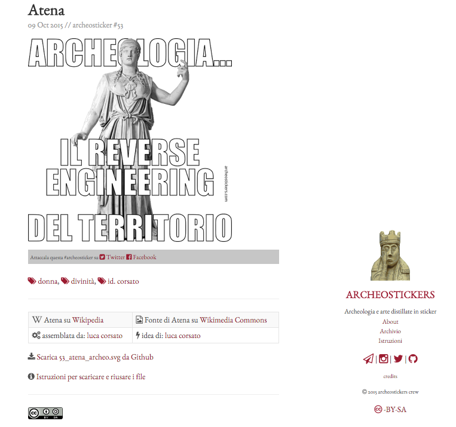

archeostickers

archeostickers.com
Cosa sono le archeostickers
Archeostickers sono un pacchetto di stickers per Telegram. Segui le istruzioni per installarle
Chi ha creato archeostickers
Archeostickers sono un prodotto di opensensorsdata in collaborazione con (le nostre amichette) Professione Archeologo and ArcheoPop.
Perché abbiamo creato archeosticker
Principalmente vogliamo:
- dimostrare che si può vedere l’arte e l’archeologia sotto l’aspetto del gioco e della traduzione iconica
- riusare l’enorme patrimonio di immagini e informazioni disponibili su Wikimedia Commons
- far riusare tutto quello che abbiamo creato qui in modo aperto
Inoltre abbiamo voluto usare Jekyll e Github - come anche il sito di osd - perché:
- sono gli strumenti sempre più usati
- è un’ottima scusa per avvicinare gli umanisti al fantastico mondo del codice
- perché sono gratuiti e con un po’ di dimestichezza possono rendere autonomi per svolgere sempre più attività
- il codice (anzi… i codici) non sono altro che lingue: chi si occupa di archeologia, di arte ha imparato lingue molto più complesse… quindi non avete scuse!

Le Archeostickers vogliono bene a Wikipedia
La fatica dell’archiviare, catalogare e compilare conoscenza condivisa non deve andare mai sprecata.
Tutto ciò che è stato compilato, scritto, corretto e caricato su Wikipedia e Wikimedia Commons è un patrimonio che è lì per essere riusato. Non farlo è:
- un’offesa verso tutti quelli che hanno faticato
- un rischio per il mancato controllo di vandalismi o aggiornamenti
Per questo ogni immagine usata per creare un’archeosticker è presa da Wikimedia Commons e allo stesso modo l’archeosticker è riutilizzabile a sua volta anche a scopi commerciali.
Noi auspichiamo il riuso perché è la prova della bontà dello sforzo prodotto.
Riconoscere il riuso - e attribuirne la fonte - significa porre le fondamenta del proprio lavoro e incardinarlo in una filiera dove il valore non è dato dall’esclusività ma dalla sua disponibilità.
TUTTE le archeostickers sono riutilizzabili anche a scopi commerciali
perché le rilasciamo con licenza [Creative Commons Attibuzione Condividi allo stesso modo]((http://creativecommons.org/licenses/by-sa/4.0/) e
questo stesso sito può essere scaricato e - ovviamente - riutilizzato
con due uniche richieste:
- dire che le abbiamo fatte noi (archeostickers)
- condividere allo stesso modo
(esempio: ti puoi fare e vendere un libro con le nostre archeostickers ma non puoi averne né l’esclusiva e nemmeno metterci la simpatica scritta “tutti i diritti riservati”)